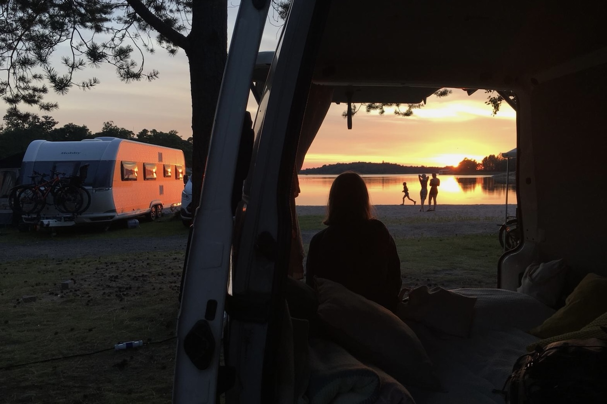

Vapaus, seikkailu ja spontaanius
Ihanaa, että olet löytänyt tiesi pakumatkailun maailmaan! Ehkä jo tiesitkin, että se on paras reissaamisen muoto tai, jos et ole vielä vakuuttunut, toivon, että annat sille tämän sivun luettuasi mahdollisuuden. Jos olet seikkailunnälkäinen reissaaja, joka rakastaa vapautta ja spontaaneja suunnitelmia, pakumatkailu on juuri sinua varten.
Vinkit pakumatkailun aloittamiseen
Pakureissaaminen voi tuntua haastavalta, jos et omista omaa pakettiautoa, asuntoautoa tai -vaunua. Onneksi pakumatkailun aloittaminen onnistuu myös ilman omaa pakua. Riippuen budjetistasi voit vuokrata suoraan valmiin reissupakun kaikilla höysteillä tai ihan tavallisen pakettiauton ja heittää patjan lattialle. Paku kannattaa muistaa vuokrata ajoissa, jotta saat varmasti haluamasi kulkuneuvon lomasi ajalle. Muuten reissussa ei tarvitsekaan paljoa suunnitella ennakkoon, jos et halua. Koti kulkee aina mukana, eikä majoituskuluistakaan tarvitse erikseen murehtia. Hyvä idea on kuitenkin varata matkakassaa jonkun verran extraa, jos lomalla sataa kaatamalla ja pakussa nukkuminen alkaa tympiä. Matkailublogeista ja sosiaalisesta mediasta voit saada inspiraatiota uusista reissukohteista. Kurkkaa reissublogiini, jossa kerron kolmesta upeasta pakumatkasta Suomessa, Kanadassa ja Islannissa. Tärkeintä pakumatkailun aloittamisessa on seikkailumieli ja avoin asenne uusille kokemuksille.

🚐 Top 5 vinkkiä ekaan pakureissuun
- ▸ Suunnittele reissu ainakin pääpiirteissään.
- ▸ Varaa pakettiauto ajoissa ja ota kattava vakuutus.
- ▸ Säästä riittävästi rahaa yllättäviin kuluihin.
- ▸ Pakkaa mukaan puhelimen vara-akku ja laturi.
- ▸ Lataa reissukohteen offline kartta Google Mapsiin.
🍳 Top 5 retkiruokaa
- ▸ Aamupalaksi kaurapuuroa, maapähkinävoita ja omenaa.
- ▸ Lounaaksi Real Turmat retkiruokaa suoraan pussista.
- ▸ Välipalaksi banaania, pähkinöitä ja kuivattuja mangopaloja.
- ▸ Päivälliseksi tonnikalapastaa ja kypsiä pikkutomaatteja.
- ▸ Iltapalaksi avokadoleipiä ja tuoreita kirsikoita.
Reissublogi
Inspiroidu pakureissuista ja löydä omannäköinen tapa matkustaa.
Fiilistele matkakohteita
Suomi | Turun saaristo
Kuuden saaren kierros Turun saaristossa
Upeita lauttamatkoja, upeita auringonlaskuja ja aamu-uinteja.

Islanti | Länsi- ja etelärannikko
10 päivän roadtrip Islannissa
Vesiputouksia, kuumia lähteitä ja uniikkeja leirintä-alueita.

Kanada | Banffin kansallispuisto
Neljä päivää Banffin kansallispuistossa Kanadassa
Päivävaelluksia, koskimelontaa ja turkooseja järviä.